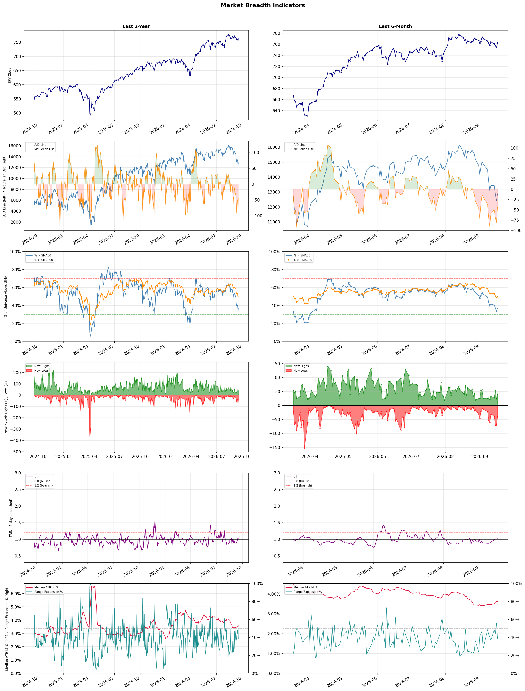

A daily market breadth and sector rotation report for active investors
| Item | Read |
|---|---|
| Regime | Defensive |
| Risk posture | Defensive |
| Universe | 1,325 stocks tracked · 41 new 52-week highs · 30 active swing setups |
| Breadth | only 36.8% of tracked stocks are above SMA50, new highs exceed new lows (41 vs 40), McClellan oscillator (breadth momentum) is negative at -43.4 |
| Leadership | Oil & Gas Refining & Marketing, Diagnostics & Research, and Steel |
| Weakest groups | Chemicals, Solar, and Footwear & Accessories |
Use this report to prioritize research and chart review; validate entries, stops, liquidity, earnings, and risk before acting.
| Item | Read |
|---|---|
| Primary read | Defensive regime with Defensive risk posture. |
| Research queue | DINO, MPC, VLO, PSX, UGP |
| Leadership focus | Oil & Gas Refining & Marketing, Diagnostics & Research, and Steel |
| Caution list | Chemicals, Solar, and Footwear & Accessories |
| Review prompt | Check extension risk, chart location, fundamentals, valuation, and earnings before using any research row. |
| Item | Read |
|---|---|
| Primary read | 3 active risk warnings; use screen output as watchlist input only. |
| Bullish screens | DINO, MPC, UGP, ILMN, NEO |
| Bearish screens | GRAB, AON, ALHC, VVV, FIS |
| Alerts / levels | Automated trigger, stop, ATR, liquidity, reward/risk, and event-risk levels are pending future enrichment. |
| Review prompt | Open the linked chart, define trigger and invalidation, then check liquidity and event risk independently. |
Risk Posture: Defensive — screen backdrop favors caution; require independent risk review before new exposure
Metric context: McClellan below -50 = elevated selling pressure; below -100 = washout territory. Range Expansion = share of stocks with daily range above their 20-day average. Signal Density = share of tracked names appearing in signal screens.
| Breadth Date | % > SMA50 | % > SMA200 | New Highs | New Lows | McClellan | Median Range | Avg Range | Median ATR14 | Range Expansion | Signal Density |
|---|---|---|---|---|---|---|---|---|---|---|
| 2026-09-17 | 36.8% | 49.7% | 41 | 40 | -43.4 | 2.8% | 3.3% | 3.6% | 38.7% | 12.0% |

Prior comparison date: September 16, 2026
| Metric | Prior | Current | Change |
|---|---|---|---|
| Regime | Defensive | Defensive | unchanged |
| Risk Posture | Defensive | Defensive | unchanged |
| % > SMA50 | 33.8% | 36.8% | +3.0 pts |
| % > SMA200 | 48.7% | 49.7% | +0.9 pts |
| New Highs | 22 | 41 | +19 |
| New Lows | 70 | 40 | +30 |
Top-10 industries entering: Banks - Diversified. Top-10 industries leaving: Oil & Gas E&P. New multi-signal long setups: DELL, IOVA, MXL, RIOT, SMTC, TH. New multi-signal short setups: FERG, GRAB, GT, TME.
| Status | Tickers | Read |
|---|---|---|
| Added | DELL, FERG, GRAB, GT, IOVA, MXL, RIOT, SMTC | New technical screen matches vs prior report. |
| Removed | ARDX, BIDU, BUR, CLX, CWH, IONS, LAZ, LULU | No longer present in today's technical screen matches. |
| Still Active | ALHC, AON, AVTR, BILI, CMBT, DINO, DT, FIS | Appeared in both current and prior reports. |
| Promoted | none | Model Screen Score improved by at least 15 points. |
| Downgraded | none | Model Screen Score declined by at least 15 points. |
| Direction | Industry | ETF | Prior Rank | Current Rank | Days | Rank Change |
|---|---|---|---|---|---|---|
| Rose | Agricultural Inputs | N/A | 86 | 10 | 35 | +76 |
| Rose | Steel | SLX | 75 | 3 | 28 | +72 |
| Rose | Capital Markets | KCE | 73 | 19 | 42 | +54 |
| Rose | Grocery Stores | N/A | 81 | 32 | 42 | +49 |
| Rose | Computer Hardware | XLK | 57 | 11 | 42 | +46 |
Bull: The Agricultural Inputs sector is experiencing rising relative strength primarily due to increasing demand for agricultural products driven by favorable market conditions, as highlighted in the Motley Fool's article on the best agriculture stocks to buy in 2026. Additionally, the potential impacts of the rare 'Super El Niño' event, as discussed in Fortune, may lead to heightened volatility in weather patterns, prompting farmers to invest in agricultural inputs to mitigate risks and optimize yields. This combination of strong demand and proactive agricultural strategies positions the sector favorably for growth, as noted by Morningstar's insights on opportunities in agriculture.
Bear: While the bull thesis highlights increasing demand and proactive strategies, it overlooks the significant risks posed by rising input costs, supply chain disruptions, and potential regulatory challenges that could hamper profitability in the Agricultural Inputs sector. Additionally, the anticipated volatility from the 'Super El Niño' may not necessarily lead to increased investment in agricultural inputs; instead, it could exacerbate uncertainty and lead to reduced planting or investment as farmers grapple with unpredictable weather patterns. Overall, these headwinds suggest that the sector's current relative strength may not be sustainable in the face of these challenges.
Verdict: The Agricultural Inputs sector's rising relative strength is fundamentally driven by increasing demand for agricultural products, fueled by favorable market conditions and proactive strategies to mitigate weather-related risks, particularly in light of the anticipated 'Super El Niño' event. However, key risks include rising input costs and supply chain disruptions, which could undermine profitability and lead to reduced investment from farmers facing heightened uncertainty. Investors should closely monitor these challenges to assess the sustainability of growth in this sector.
Sources: Google News
Bull: The rising relative strength of the steel industry, as indicated by the VanEck Steel ETF (SLX) touching a new 52-week high, can be attributed to increasing demand driven by infrastructure spending and the AI sector's growing appetite for steel products. The headlines highlight a bullish sentiment around key players like Nucor and Steel Dynamics, suggesting that robust performance among these companies is bolstering investor confidence in the overall steel market, especially as they adapt to industry challenges and capitalize on new growth opportunities.
Bear: While the rising relative strength of the steel industry and the recent highs of the VanEck Steel ETF (SLX) may suggest bullish momentum, this optimism overlooks significant headwinds such as potential overcapacity, rising raw material costs, and geopolitical tensions that could disrupt supply chains. Additionally, the sustainability of demand from the AI sector and infrastructure spending is uncertain, as economic cycles can quickly shift, leading to a potential downturn in steel consumption and pricing. Therefore, investors should be cautious, as the current valuations may not fully account for these risks.
Verdict: The steel industry's recent rise, as reflected in the VanEck Steel ETF (SLX) reaching a 52-week high, is primarily driven by increased demand from infrastructure spending and the AI sector's expanding needs for steel products. However, investors should remain cautious about potential risks such as overcapacity, rising raw material costs, and geopolitical tensions that could disrupt supply chains and impact future demand. It's advisable to monitor these factors closely before making investment decisions in this sector.
Sources: Yahoo Finance, Google News
Bull: The Capital Markets sector, represented by the SPDR S&P Capital Markets ETF (KCE), is likely experiencing rising relative strength due to a combination of robust investor sentiment and favorable market conditions. As highlighted by the headlines, the ongoing bullish outlook from Wall Street and the identification of four stock sectors primed for growth by J.P. Morgan Private Bank suggest increasing confidence in financial services, which often benefits from rising interest rates and improved trading volumes. Additionally, the focus on capital markets amid a midterm election cycle may be driving investment as market participants anticipate policy shifts that could further stimulate economic activity.
Bear: While the relative strength trend of the SPDR S&P Capital Markets ETF (KCE) may appear positive, it is essential to consider the broader economic uncertainties, including potential interest rate hikes and geopolitical tensions that could dampen investor sentiment. Additionally, the recent decline in global AI stocks and calls for slowing development suggest that innovation-driven growth may be stalling, which could negatively impact the capital markets sector reliant on technological advancements and market confidence. Furthermore, the midterm election cycle often brings volatility and uncertainty, which could undermine the bullish outlook and lead to cautious investment behavior.
Verdict: The Capital Markets sector is likely experiencing rising relative strength due to strong investor sentiment bolstered by favorable market conditions, including anticipated policy shifts and rising interest rates that benefit financial services. However, investors should remain cautious of potential economic uncertainties, such as interest rate hikes and geopolitical tensions, which could undermine market confidence and lead to increased volatility during the midterm election cycle. It is advisable to monitor these risks closely while considering strategic investments in this sector.
Sources: Yahoo Finance, Google News
Bull: The rising relative strength of the Grocery Stores sector can be attributed to a combination of robust earnings reports and a favorable investment outlook highlighted in recent analyses. For instance, the Q4 earnings highlights for Albertsons indicate strong performance among grocery stocks, while articles from The Motley Fool identify grocery and food stocks as top investment opportunities for 2026, suggesting confidence in consumer demand and growth potential in the sector. Additionally, the broader trend of grocery stores outperforming other retail segments reflects a shift in consumer behavior towards essential goods, further bolstering the sector's resilience and attractiveness to investors.
Bear: While the rising relative strength of the Grocery Stores sector may seem promising, it is essential to consider the potential headwinds that could undermine this trend. For one, inflationary pressures and rising operational costs could erode profit margins, even if sales remain steady. Additionally, the increasing competition from discount retailers and e-commerce giants could disrupt traditional grocery models, leading to a potential decline in market share for established players like Albertsons, despite their recent earnings reports.
Verdict: The grocery stores sector is experiencing rising strength primarily due to robust earnings reports and a shift in consumer behavior favoring essential goods, which enhances investor confidence in the industry's growth potential. However, key risks include inflationary pressures and heightened competition from discount retailers and e-commerce, which could squeeze profit margins and threaten market share for traditional grocery chains. Investors should monitor these factors closely while considering opportunities in the sector.
Sources: Google News
Bull: The Computer Hardware sector is likely experiencing rising relative strength due to the overall bullish sentiment in the tech industry, as indicated by headlines highlighting gains in tech stocks and ETFs amid positive economic data and anticipation of Fed rate hikes. Additionally, the focus on investment opportunities in tech, as seen in articles discussing top stocks to buy and potential rotation strategies, suggests that investors are increasingly confident in the long-term growth prospects of the sector, despite short-term volatility exemplified by Super Micro Computer's decline. This confidence is bolstered by the ongoing demand for innovative hardware solutions in a technology-driven economy.
Bear: While the overall bullish sentiment in the tech industry may suggest rising relative strength, the mixed performance of tech stocks, highlighted by Super Micro Computer's significant drop amidst sector-wide selling, raises concerns about underlying vulnerabilities. Additionally, the potential rotation to telecom and software ETFs indicates a lack of confidence in the sustainability of growth within the computer hardware sector, suggesting that investors may be seeking safer or more promising opportunities elsewhere as economic uncertainties loom. This could signal a broader risk of overvaluation and a potential correction in the sector.
Verdict: The computer hardware sector is experiencing rising relative strength primarily due to bullish sentiment in the tech industry, driven by positive economic indicators and strong investor interest in growth opportunities. However, the key risk lies in the mixed performance of certain stocks, such as Super Micro Computer, which suggests underlying vulnerabilities and could indicate a potential sector correction if investors shift focus towards safer assets in the face of economic uncertainties. Investors should monitor stock performance closely and consider diversifying into sectors with more stable growth prospects.
Sources: Yahoo Finance, Google News
| Direction | Industry | ETF | Prior Rank | Current Rank | Days | Rank Change |
|---|---|---|---|---|---|---|
| Fell | Travel Services | N/A | 9 | 72 | 42 | -63 |
| Fell | Uranium | URA | 23 | 82 | 14 | -59 |
| Fell | Semiconductor Equipment & Materials | SOXX | 17 | 74 | 35 | -57 |
| Fell | Restaurants | N/A | 32 | 78 | 28 | -46 |
| Fell | Building Products & Equipment | XHB | 40 | 84 | 42 | -44 |
Bear: While the bull analyst highlights potential gains from undervalued stocks and innovations in the travel sector, the persistent decline in relative strength suggests deeper, systemic issues that may not be easily resolved by technological advancements or short-term investment opportunities. Rising interest rates and inflation are likely to continue squeezing consumer budgets, leading to a sustained decrease in discretionary spending on travel. Additionally, the focus on tech-enabled solutions may not be enough to overcome the fundamental challenges facing traditional travel services, which could struggle to adapt in an increasingly competitive and cost-sensitive market.
Bull: The Travel Services industry is experiencing a decline in relative strength largely due to macroeconomic factors such as rising interest rates and inflation, which can dampen consumer spending on discretionary items like travel. Additionally, the focus on undervalued stocks and investment opportunities in the sector, as highlighted by sources like The Motley Fool and Morningstar, suggests that while there are potential gains ahead, current market sentiment may be cautious, leading to a temporary pullback in stock performance. Furthermore, innovations like Webuy’s AI travel card indicate a shift in consumer preferences towards tech-enabled travel solutions, which may be causing traditional travel services to lag behind.
Verdict: The Travel Services industry's decline is primarily driven by macroeconomic pressures, including rising interest rates and inflation, which are constraining consumer spending on discretionary travel. While innovations like tech-enabled solutions may offer some potential for recovery, the key risk remains that these advancements may not sufficiently address the underlying challenges of a cost-sensitive market, leading to a prolonged downturn in the sector. Investors should approach any opportunities in this space with caution, closely monitoring economic indicators and consumer sentiment.
Sources: Google News
Bear: While the bull analyst attributes the recent decline in uranium stocks to sector-specific volatility and individual company issues, the underlying fundamentals of the uranium market remain concerning. The persistent cash burn and timeline issues faced by key players like NuScale Power highlight the sector's reliance on speculative investments rather than solid financial performance, which could deter long-term investors. Furthermore, as broader commodity trends favor oil and other energy sources, uranium may struggle to regain traction, especially if the market perceives it as a less viable or riskier investment compared to more profitable sectors.
Bull: The recent decline in the relative strength of uranium stocks can be attributed to a combination of sector-specific volatility and investor sentiment surrounding individual companies. The headlines indicate a split in the sector, with profitable uranium producers being differentiated from loss-making developers, as seen in the reactions to NuScale Power's cash burn concerns and UBS's downgrade. Additionally, the overall market sentiment may be influenced by broader commodity trends, as highlighted by the performance of oil and other commodities, which could be diverting investor attention away from uranium stocks.
Verdict: The recent decline in uranium stocks is primarily driven by investor concerns over cash burn and financial performance among key players, such as NuScale Power, which raises doubts about the sector's viability and attractiveness compared to more profitable energy investments. The key risk from the bear case is that if uranium fails to demonstrate solid financial fundamentals and continues to be overshadowed by stronger commodity trends in oil and other sectors, it may struggle to attract long-term investment, leading to further declines. Investors should closely monitor cash flow and production metrics from leading uranium producers to gauge the sector's recovery potential.
Sources: Yahoo Finance, Google News
Bear: While the bull analyst attributes the decline in relative strength to volatility and profit-taking, it's crucial to recognize that this sector is facing fundamental headwinds, including the potential for falling memory chip prices and ongoing economic uncertainties that could dampen demand. Additionally, the recent rallies in stocks like Qualcomm and AMD may be short-lived, as they do not address the underlying issues of overcapacity and pricing pressure that could lead to further declines in profitability across the semiconductor equipment and materials space. The significant drop in Applied Materials' stock, coupled with concerns about the sustainability of AI investments, suggests that the market may be underestimating the risks inherent in this sector.
Bull: The Semiconductor Equipment & Materials sector is experiencing a decline in relative strength primarily due to recent volatility and profit-taking in key stocks like Applied Materials, which fell 10% after negative news related to Broadcom, and a broader market reaction to fluctuating memory chip prices. Additionally, while some semiconductor stocks like Qualcomm and AMD have seen short-term rallies, the overall sentiment is impacted by concerns over the sustainability of these gains amid economic uncertainties and potential Fed rate hikes, as indicated by the mixed performance of ETFs and futures in the headlines.
Verdict: The semiconductor equipment and materials sector is likely experiencing a decline due to fundamental challenges such as falling memory chip prices and economic uncertainties that threaten demand stability. Key risks include overcapacity and pricing pressure, which could further erode profitability, particularly as the market grapples with the sustainability of AI investments and the implications of potential Fed rate hikes. Investors should closely monitor these factors and consider a cautious approach to exposure in this sector.
Sources: Yahoo Finance, Google News
Bear: While the bull analyst suggests that the recent decline in the restaurant industry's relative strength is merely a temporary dip, the persistent softness in dining traffic, as reported in the Seeking Alpha article, raises concerns about a potential shift in consumer behavior that could indicate a longer-term trend rather than a fleeting issue. Additionally, the notion of "valuation traps" is particularly relevant in a rising interest rate environment, where investors may be forced to reassess the sustainability of growth projections in a sector already facing pressures from inflation, labor costs, and changing consumer preferences. This suggests that the current selloff may not present a buying opportunity but rather signal deeper structural challenges within the industry.
Bull: The recent decline in the relative strength of the restaurant industry can be attributed to soft August dining traffic, as highlighted in the Seeking Alpha article, which suggests a temporary dip in consumer spending and foot traffic. Additionally, the broader market sentiment may be influenced by concerns over valuation traps amidst a selloff, as noted in the Seeking Alpha piece, leading to heightened caution among investors. However, this creates a compelling opportunity for value investors, as highlighted by Yahoo Finance, which points to steady growth prospects and specific stocks poised for recovery in the sector.
Verdict: The restaurant industry's recent decline is primarily driven by a significant drop in dining traffic, indicating potential shifts in consumer behavior that could signify a longer-term trend rather than a temporary setback. The key risk highlighted by the bear thesis is that rising interest rates and persistent inflation may exacerbate existing pressures, leading to a reassessment of growth sustainability and possibly revealing deeper structural challenges within the sector. Investors should approach with caution, focusing on companies with strong fundamentals and adaptability to changing market conditions.
Sources: Google News
Bear: While the bull analyst highlights the challenges in the housing market, it's crucial to recognize that the underlying issues are more systemic and persistent than temporary fluctuations. The rising interest rates and economic uncertainty are not just short-term hurdles but indicative of a broader tightening monetary policy that could stifle demand in the housing sector for an extended period. Furthermore, the "Landmark Housing Affordability Bill" may not be sufficient to counteract the significant headwinds of inflation and reduced purchasing power, leading to a prolonged downturn in the Building Products & Equipment sector, as evidenced by the falling relative strength trend of the XHB ETF.
Bull: The Building Products & Equipment sector, represented by the SPDR S&P Homebuilders ETF (XHB), is likely experiencing a decline in relative strength due to ongoing challenges in the housing market, as indicated by headlines like "Opendoor Is Down 42% in 2026," which reflects broader concerns about housing affordability and competition. Additionally, while the recent "Landmark Housing Affordability Bill" may provide some relief, the immediate impact of rising interest rates and economic uncertainty has likely dampened investor sentiment, putting pressure on stock performance across the sector.
Verdict: The Building Products & Equipment sector is likely experiencing a decline due to systemic challenges such as rising interest rates and persistent economic uncertainty, which are dampening housing demand and affordability. The key risk from the bear case is that these conditions may not be temporary, potentially leading to a prolonged downturn in the sector as purchasing power remains constrained despite legislative efforts like the "Landmark Housing Affordability Bill." Investors should remain cautious and consider reallocating resources to sectors less impacted by these macroeconomic pressures.
Sources: Yahoo Finance, Google News
| Industry | Rank | ETF | 7d | 14d | 28d | 42d | Chg 42d | Size | 20D | 60D | Composite | Active Setups |
|---|---|---|---|---|---|---|---|---|---|---|---|---|
| Oil & Gas Refining & Marketing | 1 | CRAK | 1 | 1 | 3 | 1 | 0 | 7 | 15.2% | 60.7% | 0.970 | 0 |
| Diagnostics & Research | 2 | N/A | 4 | 2 | 1 | 5 | +3 | 16 | 10.6% | 46.7% | 0.965 | 0 |
| Steel | 3 | SLX | 9 | 18 | 75 | 16 | +13 | 5 | 14.3% | 16.3% | 0.957 | 0 |
| Health Information Services | 4 | N/A | 7 | 3 | 2 | 28 | +24 | 12 | 10.6% | 48.1% | 0.918 | 0 |
| Oil & Gas Integrated | 5 | XLE | 2 | 7 | 12 | 12 | +7 | 10 | 4.2% | 21.9% | 0.869 | 0 |
| Software - Infrastructure | 6 | IGV | 22 | 20 | 14 | 15 | +9 | 62 | 2.5% | 19.2% | 0.845 | 1 |
| Medical Care Facilities | 7 | IHF | 10 | 19 | 11 | 22 | +15 | 9 | 2.1% | 20.3% | 0.829 | 0 |
| Gold | 8 | GDX | 6 | 4 | 8 | 41 | +33 | 25 | -2.0% | 23.3% | 0.786 | 1 |
| Banks - Diversified | 9 | N/A | 11 | 10 | 34 | 4 | -5 | 16 | 1.0% | 6.0% | 0.760 | 0 |
| Agricultural Inputs | 10 | N/A | 5 | 6 | 43 | 59 | +49 | 5 | 7.6% | 15.6% | 0.757 | 0 |
Rank columns (7d–42d) show the industry's rank that many trading days ago — lower is stronger. Chg 42d = rank change vs 42 trading days ago — positive means the industry moved up. 20D and 60D are the mean stock return within the industry over that period. Active Setups: count of today's swing-trade candidates from this industry appearing across all signal screens.
| Industry | Rank | ETF | 7d | 14d | 28d | 42d | Chg 42d | Size | 20D | 60D | Composite | Active Setups |
|---|---|---|---|---|---|---|---|---|---|---|---|---|
| Chemicals | 87 | N/A | 74 | 84 | 85 | 87 | 0 | 8 | -10.7% | -21.0% | 0.081 | 0 |
| Solar | 86 | TAN | 86 | 87 | 87 | 86 | 0 | 8 | -8.9% | -28.6% | 0.090 | 0 |
| Footwear & Accessories | 85 | N/A | 87 | 88 | 86 | 70 | -15 | 5 | -10.4% | -16.7% | 0.096 | 0 |
| Building Products & Equipment | 84 | XHB | 82 | 82 | 72 | 40 | -44 | 8 | -10.9% | -10.8% | 0.108 | 0 |
| Leisure | 83 | N/A | 75 | 66 | 73 | 42 | -41 | 9 | -11.5% | -11.4% | 0.130 | 0 |
| Uranium | 82 | URA | 51 | 23 | 50 | 76 | -6 | 6 | -11.9% | -13.7% | 0.150 | 0 |
| Resorts & Casinos | 81 | N/A | 73 | 81 | 59 | 48 | -33 | 6 | -10.2% | -13.4% | 0.153 | 0 |
| Utilities - Renewable | 80 | N/A | 79 | 78 | 80 | 85 | +5 | 6 | -9.7% | -24.1% | 0.158 | 0 |
| REIT - Diversified | 79 | N/A | 56 | 74 | 78 | 72 | -7 | 5 | -8.0% | -8.7% | 0.161 | 0 |
| Restaurants | 78 | N/A | 58 | 45 | 32 | 54 | -24 | 16 | -13.1% | -8.7% | 0.170 | 1 |
Rank columns (7d–42d) show the industry's rank that many trading days ago — lower is stronger. Chg 42d = rank change vs 42 trading days ago — positive means the industry moved up. 20D and 60D are the mean stock return within the industry over that period. Active Setups: count of today's swing-trade candidates from this industry appearing across all signal screens.
These are research candidates from top-ranked stocks, capped at five names per industry to avoid over-concentration. Returns shown (60D, 120D, 250D) are historical — they reflect where prices have already moved, not forward expectations. Extension Risk flags names that may require extra patience or a better entry point. They are not buy signals.
Chart: TV = TradingView chart (opens in browser); PDF = local chart file (if downloaded).
| Ticker | Name | Industry | Industry Rank | Market Cap | 60D Hist | 120D Hist | 250D Hist | Extension Risk | Research Reason | Chart |
|---|---|---|---|---|---|---|---|---|---|---|
| DINO | HF Sinclair | Oil & Gas Refining & Marketing | 1 | N/A | 78.7% | 86.9% | 126.7% | Extended | Top-ranked in industry; extended | TV |
| MPC | Marathon Petroleum | Oil & Gas Refining & Marketing | 1 | N/A | 70.3% | 71.0% | 131.9% | Extended | Top-ranked in industry; extended | TV |
| VLO | Valero Energy | Oil & Gas Refining & Marketing | 1 | N/A | 69.9% | 67.7% | 157.1% | Extended | Top-ranked in industry; extended | TV |
| PSX | Phillips 66 | Oil & Gas Refining & Marketing | 1 | N/A | 61.8% | 50.9% | 114.9% | Extended | Top-ranked in industry; extended | TV |
| UGP | Ultrapar Participacoes | Oil & Gas Refining & Marketing | 1 | N/A | 58.0% | 45.3% | 96.1% | Extended | Top-ranked in industry; extended | TV |
| WGS | GeneDx Holdings | Diagnostics & Research | 2 | N/A | 80.7% | 71.1% | -19.7% | Extended | Top-ranked in industry; extended | TV |
| NEO | NeoGenomics | Diagnostics & Research | 2 | N/A | 73.4% | 156.3% | 130.7% | Extended | Top-ranked in industry; extended | TV |
| NTRA | Natera | Diagnostics & Research | 2 | N/A | 56.0% | 86.7% | 103.7% | Extended | Top-ranked in industry; extended | TV |
| ILMN | Illumina | Diagnostics & Research | 2 | N/A | 48.7% | 97.1% | 138.0% | Constructive | Top-ranked in industry | TV |
| RVTY | Revvity | Diagnostics & Research | 2 | N/A | 47.0% | 68.7% | 67.7% | Constructive | Top-ranked in industry | TV |
| GGB | Gerdau | Steel | 3 | N/A | 23.6% | 49.7% | 67.9% | Constructive | Top-ranked in industry | TV |
| MT | ArcelorMittal SA | Steel | 3 | N/A | 19.0% | 48.0% | 119.2% | Constructive | Top-ranked in industry | TV |
| CLF | Cleveland-Cliffs | Steel | 3 | N/A | 14.3% | 50.3% | 11.6% | Constructive | Top-ranked in industry | TV |
| SID | National Steel | Steel | 3 | N/A | 13.5% | -4.1% | -21.3% | Constructive | Top-ranked in industry | TV |
| NUE | Nucor | Steel | 3 | N/A | 10.9% | 60.7% | 100.1% | Constructive | Top-ranked in industry | TV |
| TXG | 10x Genomics | Health Information Services | 4 | N/A | 141.5% | 276.7% | 480.0% | Very extended | Top-ranked in industry; very extended | TV |
| SDGR | Schrodinger | Health Information Services | 4 | N/A | 101.1% | 161.4% | 53.9% | Very extended | Top-ranked in industry; very extended | TV |
| TEM | Tempus AI | Health Information Services | 4 | N/A | 65.3% | 76.5% | -7.7% | Extended | Top-ranked in industry; extended | TV |
| HTFL | Heartflow | Health Information Services | 4 | N/A | 43.8% | 91.5% | 52.6% | Constructive | Top-ranked in industry | TV |
| HNGE | Hinge Health | Health Information Services | 4 | N/A | 34.6% | 135.7% | 66.4% | Extended | Top-ranked in industry; extended | TV |
These are technical screen matches from existing signal files. They are not trade recommendations. Trigger, stop, ATR, liquidity, reward/risk, and event risk still require separate validation until those inputs are available.
Model Screen Score is weighted by signal count, industry rank, freshness, and setup type. It is not a probability of profit, expected return, or suitability rating. Industry cap: max 3 candidates per industry.
Signal glossary: Momentum Pullback = stock in an uptrend that has pulled back 10–30% and shows re-entry conditions. MA Compression = short- and long-term moving averages converging, often preceding a directional move. Three-Day Up/Down = three consecutive closes in the same direction. New 52Wk High/Low = price reached a new annual extreme.
Chart: TV = TradingView chart (opens in browser); PDF = local chart file (if downloaded).
| Ticker | Industry | Setups | Close | Industry Rank | Signal Count | Model Screen Score | Reason | Chart |
|---|---|---|---|---|---|---|---|---|
| DINO | Oil & Gas Refining & Marketing | New 52Wk High; Three-Day Up | 116.62 | 1 | 2 | 100 | Multi-signal; top industry breakout | TV |
| MPC | Oil & Gas Refining & Marketing | New 52Wk High; Three-Day Up | 421.96 | 1 | 2 | 100 | Multi-signal; top industry breakout | TV |
| UGP | Oil & Gas Refining & Marketing | New 52Wk High; Three-Day Up | 7.58 | 1 | 2 | 100 | Multi-signal; top industry breakout | TV |
| ILMN | Diagnostics & Research | New 52Wk High; Three-Day Up | 245.18 | 2 | 2 | 100 | Multi-signal; top industry breakout | TV |
| NEO | Diagnostics & Research | New 52Wk High; Three-Day Up | 19.89 | 2 | 2 | 100 | Multi-signal; top industry breakout | TV |
| RVTY | Diagnostics & Research | New 52Wk High; Three-Day Up | 146.73 | 2 | 2 | 100 | Multi-signal; top industry breakout | TV |
| SDGR | Health Information Services | New 52Wk High; Three-Day Up | 30.24 | 4 | 2 | 93 | Multi-signal; top industry breakout | TV |
| DELL | Computer Hardware | New 52Wk High; Three-Day Up | 588.40 | 11 | 2 | 85 | Multi-signal; new-high strength | TV |
| CMBT | Oil & Gas Midstream | New 52Wk High; Three-Day Up | 20.41 | 12 | 2 | 85 | Multi-signal; new-high strength | TV |
| FRO | Oil & Gas Midstream | New 52Wk High; Three-Day Up | 54.03 | 12 | 2 | 85 | Multi-signal; new-high strength | TV |
| DT | Software - Application | New 52Wk High; Three-Day Up | 55.83 | 17 | 2 | 77 | Multi-signal; new-high strength | TV |
| RIOT | Capital Markets | Momentum Pullback; Three-Day Up | 21.88 | 19 | 2 | 77 | Multi-signal; pullback setup | TV |
| TH | Specialty Business Services | New 52Wk High; Three-Day Up | 20.76 | 24 | 2 | 77 | Multi-signal; new-high strength | TV |
| IOVA | Biotechnology | New 52Wk High; Three-Day Up | 10.02 | 30 | 2 | 70 | Multi-signal; new-high strength | TV |
| MXL | Semiconductors | Momentum Pullback; Three-Day Up | 74.99 | 39 | 2 | 70 | Multi-signal; pullback setup | TV |
| SMTC | Semiconductors | New 52Wk High; Three-Day Up | 178.19 | 39 | 2 | 70 | Multi-signal; new-high strength | TV |
| UMC | Semiconductors | Momentum Pullback; Three-Day Up | 24.47 | 39 | 2 | 70 | Multi-signal; pullback setup | TV |
| NEOG | Medical Devices | New 52Wk High; Three-Day Up | 12.83 | 42 | 2 | 65 | Multi-signal; new-high strength | TV |
| AVTR | Medical Instruments & Supplies | New 52Wk High; Three-Day Up | 15.86 | 43 | 2 | 65 | Multi-signal; new-high strength | TV |
| TXNM | Utilities - Regulated Electric | MA Compression; Three-Day Up | 58.59 | 66 | 2 | 50 | Multi-signal; compression setup | TV |
Bearish setups — stocks making new lows or showing persistent downside patterns. Validate carefully before acting.
| Ticker | Industry | Setups | Close | Industry Rank | Signal Count | Model Screen Score | Reason | Chart |
|---|---|---|---|---|---|---|---|---|
| GRAB | Software - Application | New 52Wk Low; Three-Day Down | 2.81 | 17 | 2 | 47 | Multi-signal; new-low weakness | TV |
| AON | Insurance Brokers | New 52Wk Low; Three-Day Down | 296.05 | 22 | 2 | 47 | Multi-signal; new-low weakness | TV |
| ALHC | Healthcare Plans | New 52Wk Low; Three-Day Down | 8.70 | 28 | 2 | 40 | Multi-signal; new-low weakness | TV |
| VVV | Auto & Truck Dealerships | New 52Wk Low; Three-Day Down | 27.06 | 35 | 2 | 40 | Multi-signal; new-low weakness | TV |
| FIS | Information Technology Services | New 52Wk Low; Three-Day Down | 36.43 | 36 | 2 | 40 | Multi-signal; new-low weakness | TV |
| TMUS | Telecom Services | New 52Wk Low; Three-Day Down | 166.45 | 38 | 2 | 40 | Multi-signal; new-low weakness | TV |
| BILI | Internet Content & Information | New 52Wk Low; Three-Day Down | 14.40 | 41 | 2 | 35 | Multi-signal; new-low weakness | TV |
| TME | Internet Content & Information | New 52Wk Low; Three-Day Down | 7.77 | 41 | 2 | 35 | Multi-signal; new-low weakness | TV |
| GT | Auto Parts | New 52Wk Low; Three-Day Down | 5.15 | 51 | 2 | 35 | Multi-signal; new-low weakness | TV |
| FERG | Industrial Distribution | New 52Wk Low; Three-Day Down | 214.26 | 61 | 2 | 25 | Multi-signal; new-low weakness | TV |
How To Use This Report
| Use | Purpose |
|---|---|
| Market map | Start with breadth, regime, risk warnings, and what changed since the prior report. |
| Industry scan | Use leading, deteriorating, rising, and declining industries to focus research. |
| Research queue | Treat long-term candidates as names for deeper fundamental, valuation, and chart review. |
| Technical review | Treat bullish and bearish screen matches as watchlist inputs that require independent trigger, stop, liquidity, and event-risk checks. |
| Source follow-up | Use chart links and source files to verify raw inputs before relying on any row. |
What This Report Is Not
| Not | Meaning |
|---|---|
| Investment advice | The report does not evaluate personal objectives, risk tolerance, tax situation, account type, or suitability. |
| Buy/sell recommendation | Named tickers are research candidates or screen matches, not recommendations to transact. |
| Price target | The report does not provide fair value estimates, targets, or expected returns. |
| Trade plan | Trigger, stop, sizing, reward/risk, liquidity, and event-risk review remain separate user work. |
| Performance claim | Model Screen Score is not validated historical performance or a forecast of future results. |
| Item | Note |
|---|---|
| Version | Daily Report Methodology v1 |
| Model Screen Score | Screen-fit rank based on signal count, industry rank, freshness, and setup type. |
| Not predictive proof | The score is not expected return, probability of profit, historical validation, or suitability analysis. |
| Industry ranks | Composite industry ranks use existing daily ranking outputs and historical rank columns when available. |
| Research candidates | Long-term rows are research candidates from ranked stocks and leading industries, with historical returns labeled as historical only. |
| Technical matches | Bullish and bearish rows are screen matches requiring independent chart, trigger, stop, liquidity, and event-risk review. |
| Source | Status | Rows | Path |
|---|---|---|---|
| Market breadth | present | 1254 | breadth_20260917.csv |
| Industry composite rankings | present | 87 | all_industry_composite_20260917.csv |
| Top ranked stocks | present | 167 | top_ranked_composite_20260917.csv |
| All ranked stocks | present | 1325 | all_stocks_composite_sorted_20260917.csv |
| Top momentum pullbacks | present | 1475 | top_momentum_pullbacks_20260917.csv |
| MA compression | present | 1475 | ma_compression_stocks_20260917.csv |
| Three-day up/down | present | 173 | three_day_up_down_stocks_20260917.csv |
| New 52-week members | present | 81 | breadth_new_52wk_members_20260917.csv |
This report is generated from automated technical screens and is for informational and research purposes only. It is not investment advice, a solicitation, or a recommendation to buy or sell any security. Past performance is not indicative of future results. You are solely responsible for your own investment decisions. Consult a licensed financial advisor before acting on any information herein.